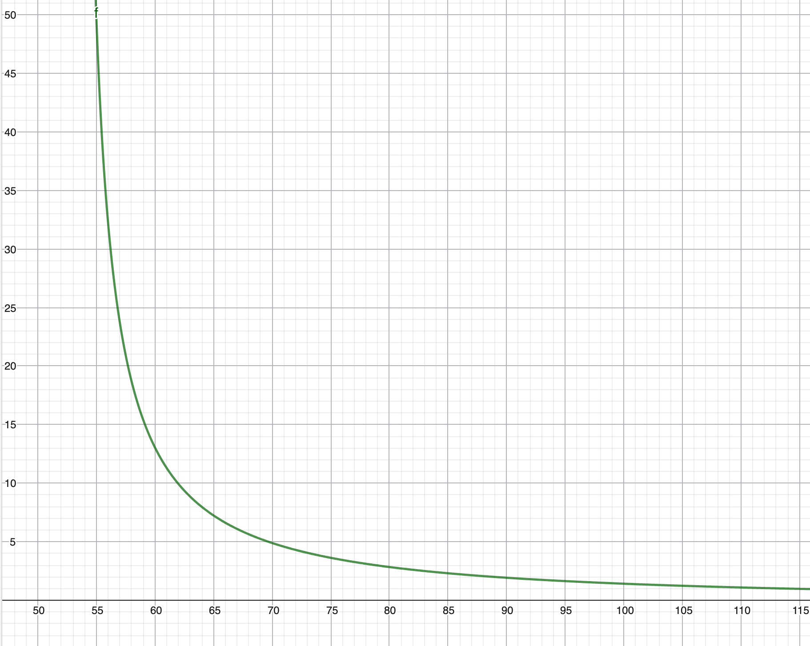
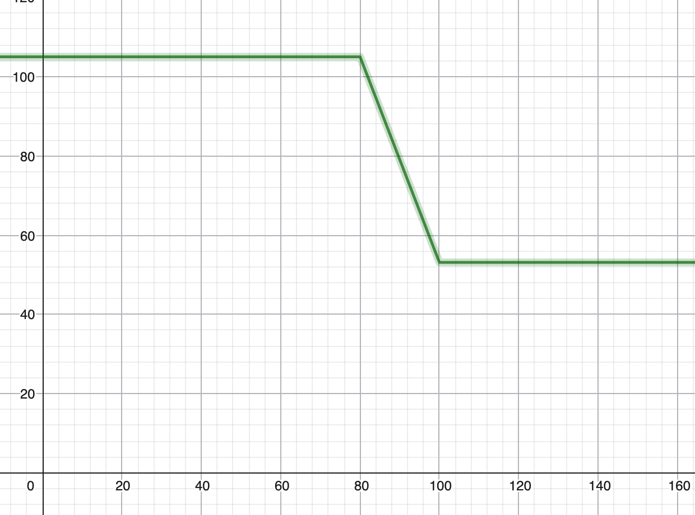

Gestione termica/potenza
La massimizzazione della coppia erogabile è limitata dai vincoli termici del motore, tutti forniti dal datasheet del produttore del relativo modello. Il datasheet del motore AMK DD5-14-10-POW (in uso dal nostro team) indica una corrente nominale di stallo continuativo \(I_0\) pari a 53,1 Arms. Tuttavia, per garantire la coppia richiesta per le accelerazioni repentine e per le alte velocità, è necessario operare in regime di sovraccarico, sfruttando correnti di picco fino a 105 Arms \(I_{max}\), che consentono di raggiungere valori di coppia significativamente superiori al valore nominale, nel nostro caso 21 Nm contro i 9,8 Nm nominali.
Il problema fondamentale risiede nella natura transitoria del sovraccarico. L'utilizzo di correnti superiori a \(I_0\) genera un accumulo termico per effetto Joule che il sistema di raffreddamento non è in grado di smaltire istantaneamente. Se tale condizione persiste oltre un tempo critico, si rischia il danneggiamento irreversibile degli avvolgimenti o la smagnetizzazione dei magneti permanenti.
Per controllare questi limiti si utilizza l'algoritmo \(I^2t\), anche detto integrale termico. Tale modello permette di stimare in tempo reale l'energia termica accumulata nel motore, consentendo di sfruttare l'intera capacità di sovraccarico per periodi limitati, intervenendo con una riduzione della coppia solo all'approssimarsi della soglia critica definita dal costruttore.
Algoritmo \(I^2t\) (integrale termico)
Prima di cominciare a pensare all'algoritmo è bene tenere a mente alcuni dati importanti strettamente correlati al modello di motore impiegato:
- Coppia nominale: 9,8 Nm
- Corrente di stallo continuo: \(I_{cont}\) = 53,1 A, è la corrente che il motore può reggere e dissipare per un tempo indefinito perché il calore viene dissipato in tempo utile. Corrisponde ad una coppia nominale
- Coppia massima: 21 Nm
- Corrente massima: \(I_{max}\) = 105 A, picco massimo assoluto consentito.
- Tempo massimo \(T_{lim}\) a \(I_{max}\) = 1,24 s. Quanto tempo il motore sopravvive al picco massimo.

L'algoritmo opera utilizzando come riferimento un bucket termico, che racchiude l'energia termica che viene contenuta nel motore. Il secchio ha una larghezza massima che rappresenta la quantità di calore che il motore riesce a sopportare prima di subire danni irrisolvibili e la smagnetizzazione dei magneti permanenti. L'unita di misura del budget termico è in \(A^2s\) e si calcola come:
Sostituendo i valori si ha \((105^2-53,1^2)\times1,24 = \mathbf{10.175 \, A^2s}\), valore che può raggiungere l'integratore prima che il motore si consideri surriscaldato.
Dopo aver calcolato il budget termico si inizia a misurare effettivamente il budget utilizzato secondo la stessa formula. Dato che il microcontrollore all'interno della vettura è un dispositivo a tempo discreto è opportuno definire un intervallo di tempo (\(\Delta t\)) a cui eseguire la funzione che calcola l'energia termica generata o dissipata nel motore. Una frequenza che ci risulta ottimale è 100 Hz, quindi 10 ms tra una misura e l'altra.
Per il calcolo serve la corrente media erogata durante quel tempo, \(I_{feedback}\)
Se \(I_{feedback}\) è minore di \(I_{cont}\), l'energia risulterà negativa, quindi il motore sta dissipando il calore. Come ultimo passo si aggiorna l'integratore:
Derating
Non vogliamo che la coppia massima cali drasticamente dal massimo alla coppia nominale quando l'integratore arriva al 100%, ma si deve ridurre dolcemente la potenza erogata.
Ci sono principalmente due soglie importanti:
- La soglia warning contraddistingue il limite al quale si inizia a tagliare la coppia e corrisponde all'80% di \(E_{max}\)
- Soglia critica di stop: il bucket è pieno e il motore non può permettersi di accumulare altro calore per evitare danni permanenti, la coppia va tagliata al di sotto della nominale per permettere anche un raffreddamento
Allo scopo di implementare il derating bisogna calcolare il limite \(I_{limit}\) a ogni ciclo utilizzando le soglie.
- Se l'integratore è sotto all'80%, \(I_{limit}\) = \(I_{max}\), quindi abbiamo la possibilità di erogare tutta la corrente disponibile.
- Se è tra l'80% e il 100% bisogna abbassare linearmente la corrente da 105 A a 53 A. Per l'interpolazione si usa:
$\(Factor = \frac{\text{integrator} - \text{Soglia}_{warn}}{\text{Soglia}_{crit} - \text{Soglia}_{warn}}\)$
Dove factor va da 0 a 1 man mano che il motore si scalda
$\(I_{limit} = I_{max} - Factor \times (I_{max} - I_{cont})\)$

Temperatura liquido
Un aspetto importante da tenere in considerazione è la temperatura del liquido di raffreddamento all'interno del circuito: se il liquido si trova ad una temperatura di 60°C non condurrà calore efficientemente come se fosse a 20°C o 40°C.
Bisogna aggiustare il bucket per tenere in considerazione la temperatura iniziale dell'acqua, un \(\Delta t\) più basso tra fluido e motori diventa un problema perché abbiamo meno margine prima di raggiungere la \(T_{limit}\).
Soluzione Invece di inizializzare a 0 il bucket, bisogna riempirlo ad un valore che riflette la temperatura attuale del motore.
Definendo la temperatura iniziale del motore a \(T_{start}\):
Logicamente, se la capacità di smaltire il calore del liquido è ridotta, bisogna aggiustare il derating per compensare la perdita di efficienza. Quello che ci interessa nello specifico è la corrente che il motore può sopportare continuativamente all'attuale temperatura del fluido \(I_{cont\_actual}\):
l modello base è stato esteso introducendo un fattore di derating dipendente dalla temperatura del fluido di raffreddamento \(T_{coolant}\). Poiché la capacità di dissipazione termica è proporzionale al gradiente termico \(\Delta T\), la corrente di stallo continuativo \(I_{cont}\) viene ricalcolata dinamicamente ad ogni ciclo di controllo. Questo previene il surriscaldamento in condizioni di raffreddamento degradato (es. radiatori caldi a fine gara).
Frenata rigenerativa
Durante la frenata rigenerativa il problema termico è esattamente lo stesso, sia che la corrente abbia segno negativo che positivo non cambia assolutamente nulla. Il motivo sta nel fatto che la corrente viene elevata al quadrato, quindi che si abbia un corrente di +40A o -40A il risultato sarà lo stesso: gli avvolgimenti si riscaldano.
Il nuovo problema da considerare è la capacità di ricarica della batteria. Solitamente le celle hanno due limiti di corrente diversi per carica e scarica. Il limite massimo in scarica è dettato dalla \(I_{max\_discharge}\) dei motori che vale 105A, mentre i limite in carica è dettato dalla capacità della batteria \(I_{max\_charge}\) che vale 16A. Questo dato è stato recuperato dal datasheet delle celle che utilizziamo, ricordando che con 4 in parallelo si somma (la singola è 4A).

Limite batteria
Il datasheet mostra che si può arrivare ad una \(I_{max\_charge}\) di 19.6A, ma se ci arriviamo esplode tutto. NON si fa.
Un altra cosa da tenere in considerazione è l'aumento del DC voltage in relazione all'assorbimento di corrente della batteria. Se il pacco è carico al 100% e freniamo generando 16A, l'assorbimento è ridotto è la tensione sale, questo comportamento dovrebbe essere tenuto in considerazione dall'inverter che taglia la coppia di frenata in caso di DC voltage troppo alto, ma io non mi fido e mi sembra il caso di tenerlo in conto quando facciamo i nostri calcoli.